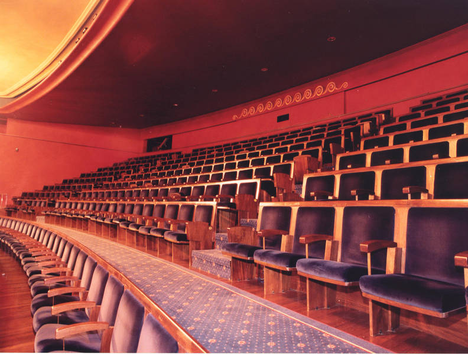

El VI Concurso de fotografía ciudad de Jerez de la Frontera se
llevará a cabo en el teatro Villamarta. Construido en 1926 por
Teodoro Anasagasti y rehabilitado en 1996, plantea una
alternativa racional aun dentro de su natural respeto al entorno
urbano. Pese a sus reducidas dimensiones, la sabia organización
espacial y la llamativa belleza de su fachada imponen su
presencia sobre el conjunto vecino.
La disposición del público con respecto al escenario es frontal
y con capacidad para 1226 espectadores divididos en tres zonas
principales: - Patio de butacas con capacidad para 581
localidades - Primer piso o Principal con capacidad para 200
localidades - Segundo piso o Anfiteatro con capacidad para 315
localidades También dispone de plateas en patio de butacas y
palcos en primer piso con capacidad para 120 localidades en
total.
La programación del Teatro incluye todo tipo de actividades;
ópera, teatro, ballet, flamenco, música clásica etc.. por lo que
su equipamiento escénico está preparado para cubrir todos estos
tipos de eventos. 
| Lunes 16: | 18:00 - Ceremonia de Inauguración 18:45 - Comunicado de los fotógrafos elegidos como candidatos al premio de mejor fotógrafo del año 19:00 - Visualización de la exposición de las fotografías candidatas al premio de mejor fotografía de paisaje 20:30 - Impartición del taller de fotografía full frame 22:45 - Cierre de la primera jornada |
| Martes 17: | 18:00 - Ceremonia de Inauguración 18:45 - Comunicado de los fotógrafos elegidos como candidatos al premio de mejor fotógrafo del año 19:00 - Visualización de la exposición de las fotografías candidatas al premio de mejor fotografía de retrato 22:45 - Cierre de la primera jornada |
| Miércoles 18: | 18:00 - Recepción de la segunda jornada 19:00 - Visualización de la exposición de las fotografías candidatas al premio de mejor fotografía de arquitectura 20:30 - Impartición del taller de fotografía en blanco y negro 22:45 - Cierre de la segunda jornada |
| Jueves 19: | 18:00 - Recepción de la tercera jornada 19:00 - Visualización de la exposición de las fotografías candidatas al premio de mejor fotografía de reportaje 21:45 - Cierre de la tercera jornada |
| Viernes 20: | 18:00 - Recepción de la tercera jornada 20:30 - Impartición del taller de fotografía deportiva 21:45 - Impartición del taller de fotografía macro 23:00 - Cierre de la tercera jornada |
| Sábado 21: | 18:00 - Recepción de la tercera jornada 20:00 - Impartición del taller de fotografía HDR 21:45 - Cierre de la tercera jornada |
| Domingo 22: | 18:00 - Recepción de la última jornada 19:00 - Visualización de la exposición de fotografías ganadoras de las últimas cinco ediciones del concurso 20:00 - Visualización de la exposición de ganadores de otros países en ediciones anteriores 21:00 - Gala de entrega de premios 2017 22:30 - Cena de gala cierre concurso |